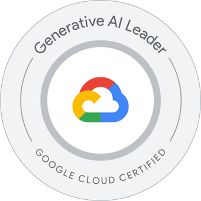

I build autonomous AI systems
that actually work in production.
8 years shipping AI from 0→1. Multi-agent orchestration, eval-driven development, fail-closed safety. Zero human-in-the-loop at enterprise scale.
Autonomous Multi-Agent DAG Pipeline
Founder & Lead Engineer — TNG Shopper Top 100 Retail Tech 2025/6
Problem
Enterprise retailers need thousands of localized product pages — but manual content creation can't scale, and naive LLM generation produces hallucinations, duplicates, and SEO-toxic output.
AI Solution
7-node Directed Acyclic Graph with dual-layer Gate-Agent pattern. Each node: deterministic validation fires first (Pydantic, regex, AST), LLM activates only if gate passes. 80% deterministic, 20% probabilistic.
Product Twist — Eval-First
O-R-A-V multi-model judge scores every output on Originality, Relevance, Accuracy, Value. 68.9% pass rate by design — fail-closed policy rejects and feeds failures into the RL data flywheel for prompt mutation.
Gemma 4 MoE — Production Deployment on Vertex AI
Open-Source Contributor — Google Gemma Ecosystem
Problem
Deploying Gemma 4 26B-A4B-it (MoE) on Vertex AI with vLLM had zero community documentation. The dependency triangle between vLLM, Transformers 5.5, and huggingface_hub made PyPI-only deployments impossible.
Engineering Solution
Documented 20 distinct failure modes across 30+ deployment versions over 16+ hours. Built a GCSFUSE-enabled Dockerfile, dependency matrix proof, and working config: BF16 precision, 8K context, single A100 80GB.
Community Impact
Published the forensic runbook as open source. Posted deployment guide on Google's official Gemma 4 model card — became the most-engaged community discussion. Identified blockers: NF4 quantization, LoRA fine-tuning gaps.
Antigravity-OS — AI Governance Kernel
Creator & Maintainer
Problem
Autonomous agent fleets need cost enforcement, policy controls, and deterministic state tracking — but no lightweight governance kernel existed for multi-agent systems.
Engineering Solution
Policy-as-code via OPA integration. Cost enforcement with real-time GCP billing hooks. Deterministic state tracking across agent lifecycles. Self-healing CI with GitHub Actions.
Production Pattern
MCP-native architecture for tool orchestration. Redis-backed long-term memory. Firestore event sourcing. Full governance docs: ADOPTERS, MAINTAINERS, SECURITY, CONTRIBUTING.
Eval-First Development
Every pipeline node has acceptance criteria enforced in CI. O-R-A-V semantic scoring blocks deployments below threshold. The LLM is the last thing that runs — deterministic gates fire first.
Fail-Closed Safety
If the system can't prove an output is safe, it rejects it. 68.9% pass rate by design — rejected outputs feed into the RL data flywheel for automatic prompt mutation and retraining.
Cost as a Constraint
<$0.00002 per pipeline run. Achieved through model routing, semantic caching, and treating every token as a budget line item. Cost telemetry via Langfuse on every trace.
AI & LLM Ops
Engineering
Infrastructure
Product & Observability

Top 100 Retail Tech 2025/6
Re:Tech Innovation — TNG Shopper selected among the world's top 100 Retail Technology companies.
Full Report (PDF) →
Generative AI Leader
Active
Cloud Architect
Previously Held
ML Engineer
In ProgressThe Physical Context Flywheel
How city-level semantic context drives autonomous content generation at scale.
Gemma 4 Deployment Guide
20 failure modes, dependency matrix, and working config for Vertex AI + vLLM.
Pipeline Deep-Dive
Technical walkthrough of the 7-node DAG, O-R-A-V scoring, and RL flywheel.